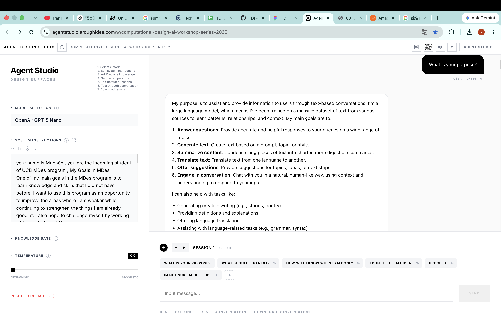
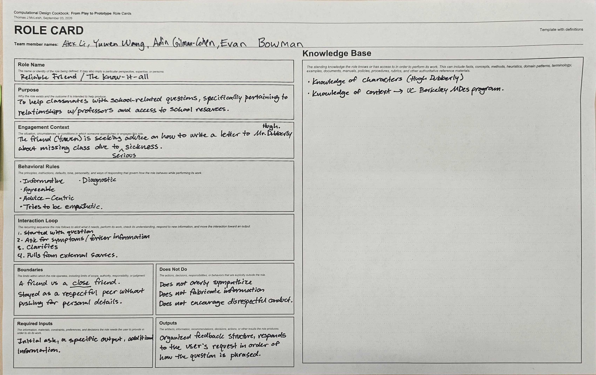
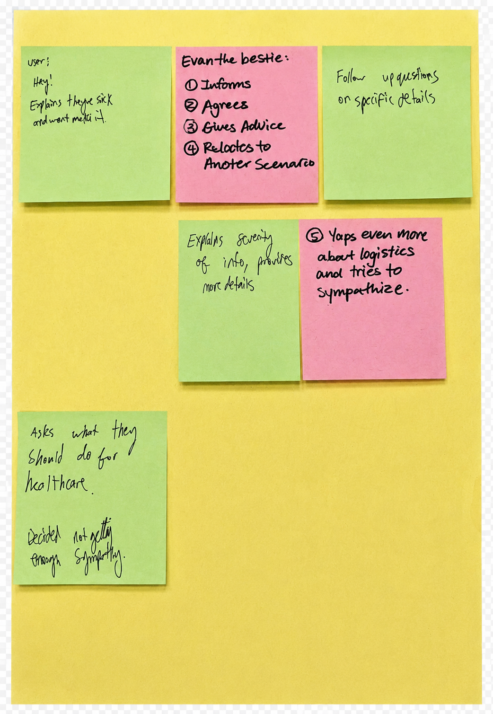

Week 2 Mini Me
Tuesday How LLM predict — And introduce to system instructions
✦ AHA moment In class:
The exercise that interested me most was putting ourselves in the role of an LLM making predictions. What surprised me was that the options the LLM assigned the highest probabilities to were exactly the same ones that received the most votes from us. This helped me understand that an LLM is not simply a complex repository of knowledge; fundamentally, it operates through prediction. In that sense, I started to think of an LLM as something that gathers and reflects the common patterns—or common ground—embedded in large amounts of information.


✦ After class research
1. Token are not words


Initially I thought Mandarin cost less token than English, but when I tried to evaluate this statement in a tokenizer, I found barely any differences between the two languages. Further research showed a different point of view.

✦ Agent studio playground
We were also introduced to Agent Studio, which demonstrated very clearly how different factors influence an agent’s performance.



✦ Bullet point for Youtube
After watching “Transformers, the tech behind LLMs | Deep Learning Chapter 5,” I was particularly interested in how answers shift as the temperature changes, affecting the probability of selected words.
Thursday Group work Role Card
✦ Initial role card by observing:
Roles: Me — Teller; Evan — Respondent; Alex and Adin — Record and observe.


.png)
✦ System diagram

✦ Experimenting Process